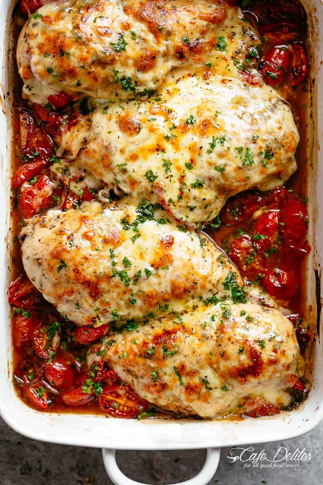

Balsamic Baked Chicken Breast with Mozzarella Cheese

Description
A quick, one pan recipe. Tender chicken with melted mozzerella with a side of tomatoes and onions.
The balsamic shines through as the heros of the recipe and perfectly enhances the taste fo the veggies.
Ingredients
- 4 chicken breasts
- 2 tablespoons olive oil
- 1 teaspoon of italian herbs
- 1 teaspoon salt
- 6 garlic cloves, minced
- 2 cups cheery tomatoes, halved
- 1/2 red onion, sliced
- 1 tablespoon brown sugar
- 3/4 cup of shredded mozzerella
- black pepper, to taste
- Fresh chopped basil, to garnish
Steps
- Preheat oven to 430F
- Place chicken breasts in a baking dish and drizzle with olive oil. Season with oregano, basil, salt, pepper and 4 cloves of minced garlic.
- Arrange the tomatoes and red onion around the chicken in the dish.
- Whisk together the balsamic vinegar, sugar and remaining garlic in a jug to combine.
- Pour mix over the chicken breasts, flip each breast in the sauce to evenly coat.
- Bake in preheated oven for 20-25 minutes.
- Sprinkle with cheese and broil (or grill) for 4-5 minutes, or until cheese is melted and golden.
- Garnish with basil and serve with pan juices.